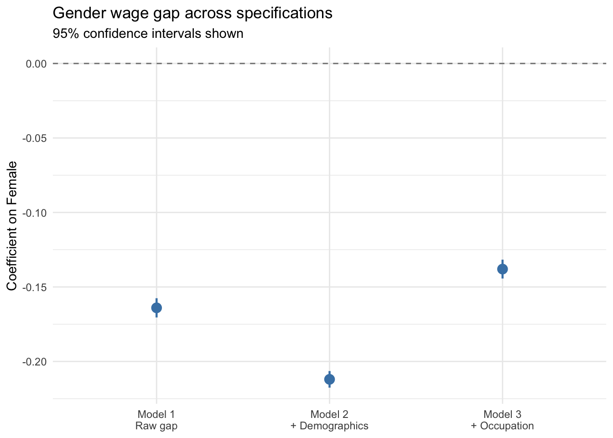

Code
library(tidyverse)
library(broom)
library(modelsummary)
library(patchwork)
library(flextable)
library(dagitty)
library(ggdag)Claudius Gräbner-Radkowitsch
June 16, 2026
June 16, 2026
Regression tells you how Y varies with X, holding other variables constant. That is a precise and useful statement — but it is not a causal statement. Whether a regression coefficient can be interpreted as the effect of X on Y depends on a separate argument about research design, which no amount of statistical testing can substitute for.
This tutorial introduces Directed Acyclic Graphs (DAGs) as a tool for making that argument explicit. A DAG is a diagram of your assumed causal model. It makes hidden assumptions visible, shows which variables to control for (and which to avoid), and clarifies what question each model specification actually answers.
Is there a gender wage gap among US workers — and what would it take to interpret a regression coefficient as evidence of discrimination?
We use the CPS MORG 2014 data. See Categorical Variables and Interaction Terms for setup details; the data file morg-2014-emp.csv is from gabors-data-analysis.com.
raw <- read_csv("data/morg-2014-emp.csv", show_col_types = FALSE)
cps <- raw |>
filter(
!is.na(earnwke), earnwke > 0,
!is.na(uhours), uhours > 0,
!is.na(occ2012), !is.na(grade92),
!is.na(age), !is.na(sex)
) |>
mutate(
wage = earnwke / uhours,
female = as.integer(sex == 2),
educ = grade92,
occ = factor(occ2012)
) |>
filter(wage > 0, wage < 500) |>
select(wage, female, age, educ, occ)Regression answers:
“How does Y vary with X, holding controls constant?”
This is not the same as:
“What is the effect of X on Y?”
The gap between the two is closed — or not — by an identification argument: a claim about why the variation in X that the regression exploits is plausible to treat as if it were randomly assigned.
Consider the raw gender wage gap:
gender | N | Median wage | Mean wage |
|---|---|---|---|
Female | 73,734 | 16.15 | 20.25 |
Male | 75,572 | 19.62 | 23.87 |
There is a clear difference. But is it discrimination? It could be. Or it could partly reflect differences in age, education, or occupation. The three-model progression below shows how much the estimated gap depends on what we control for — and why “more controls” is not always better.
modelsummary(
list(
"Model 1: Raw gap" = m1,
"Model 2: + Demographics" = m2,
"Model 3: + Occupation" = m3
),
coef_map = c(
"female" = "Female",
"age" = "Age",
"educ" = "Education (grade92)"
),
gof_omit = "AIC|BIC|Log|F|RMSE",
stars = TRUE,
notes = "Occupation dummies (Model 3) omitted from display."
)| Model 1: Raw gap | Model 2: + Demographics | Model 3: + Occupation | |
|---|---|---|---|
| + p < 0.1, * p < 0.05, ** p < 0.01, *** p < 0.001 | |||
| Occupation dummies (Model 3) omitted from display. | |||
| Female | -0.164*** | -0.212*** | -0.138*** |
| (0.003) | (0.003) | (0.003) | |
| Age | 0.012*** | 0.009*** | |
| (0.000) | (0.000) | ||
| Education (grade92) | 0.109*** | 0.060*** | |
| (0.001) | (0.001) | ||
| Num.Obs. | 149306 | 149306 | 149306 |
| R2 | 0.016 | 0.271 | 0.384 |
| R2 Adj. | 0.016 | 0.271 | 0.382 |
The female coefficient changes from -0.164 (Model 1) to -0.212 (Model 2) to -0.138 (Model 3). This does not mean Model 3 is the most correct. Each model answers a different question. A DAG makes these differences explicit.
Model 1 — the raw gap: a pure descriptive statement. The coefficient absorbs everything that co-varies with gender: age, education, occupation, and pay discrimination.
Model 2 — controlling for demographics: age and education are plausible confounders (they affect wages and are correlated with gender). Notice that the gap grew when we added these controls: women are on average more educated than men, so their higher education was partially masking the gap in the raw data. Removing this masking reveals a larger underlying difference.
Model 3 — adding occupation: this is the key trap. If gender discrimination causes occupational sorting (women are steered toward lower-paying jobs), then occupation is a mediator — it lies on the causal path from gender to wages. Controlling for it blocks part of the very effect we are trying to measure.
A DAG consists of: - Nodes — variables in the causal model - Arrows (directed edges) — representing direct causal claims (“X causes Y”) - No cycles — causes flow forward; you cannot find a path that loops back to its starting node
| Role | Definition | What happens if you control for it? |
|---|---|---|
| Confounder | Common cause of X and Y | Closes a back-door path — good |
| Mediator | Caused by X and causes Y | Blocks the causal pathway — bad control |
| Collider | Caused by both X and Y | Opens a new spurious path — bad control |
Controlling for a mediator does not give a better estimate of the total causal effect — it answers a different, narrower question. Controlling for a collider introduces spurious association that was not there to begin with.
dagitty lets you specify a DAG as a text string and ask computational questions about it — in particular, what adjustment sets are implied by the model. ggdag visualises the result.
The key function is adjustmentSets(). It returns the variables you need to hold fixed to identify a stated causal effect.
Question 1: total effect of Gender on Wage
The result is empty. Given this DAG, no controls are needed to identify the total causal effect of gender on wages. Occupation is a mediator — adding it blocks the indirect path and gives the wrong answer.
Question 2: causal effect of Occupation on Wage
Now we must control for Gender. When the exposure changes, the adjustment set changes — even with the same DAG and the same three variables.
Confounder and mediator are not fixed properties of a variable. They depend on the question. Occupation is a mediator for the gender→wage question and a variable to adjust for when studying the occupation→wage question. This is why you must state your research question before deciding what to control for.
{}When we add Background (e.g., family wealth, social networks) as an unobserved confounder, the adjustment set requires controlling for it — but we cannot, because it is unobserved. This is the fundamental problem: the adjustment set tells us what we need; the data constrains what we can control for.
tibble(
model = factor(
c("Model 1\nRaw gap", "Model 2\n+ Demographics", "Model 3\n+ Occupation"),
levels = c("Model 1\nRaw gap", "Model 2\n+ Demographics", "Model 3\n+ Occupation")
),
estimate = c(gap_m1, gap_m2, gap_m3),
se = c(
summary(m1)$coefficients["female", "Std. Error"],
summary(m2)$coefficients["female", "Std. Error"],
summary(m3)$coefficients["female", "Std. Error"]
)
) |>
ggplot(aes(model, estimate)) +
geom_hline(yintercept = 0, linetype = "dashed", colour = "gray50") +
geom_pointrange(
aes(ymin = estimate - 1.96 * se, ymax = estimate + 1.96 * se),
colour = "steelblue", linewidth = 0.8, size = 0.7
) +
labs(
x = NULL,
y = "Coefficient on Female",
title = "Gender wage gap across specifications",
subtitle = "95% confidence intervals shown"
) +
theme_minimal()
Each of these models is a conditional association. Even Model 2 cannot rule out unobserved differences between men and women that drive both wages and correlate with gender — negotiation behaviour, network access, employer pay-setting practices.
An identification argument would need to claim: “The variation in gender I am exploiting is as good as random with respect to wages, conditional on my controls.” No observational regression on this data can credibly make that claim.
This is not a failure of the data or the technique — it is a property of the question. Gender is not randomly assigned, and the labour market is not an experiment. Two strategies that can achieve identification: panel fixed effects (see Panel Data and Fixed Effects) control for all stable individual characteristics; randomised experiments such as résumé audit studies provide clean identification for narrow channels of discrimination.
| Model | Controls | Question answered |
|---|---|---|
| 1 | None | Average raw difference — pure association |
| 2 | Age, education | Gap net of demographic composition — if no unobserved confounders |
| 3 | + Occupation | Gap within occupation — occupation is a mediator |
The coefficient changes across models not because we are getting closer to the truth, but because we are changing the question each time. A DAG makes those changes explicit and principled.
Apply DAG reasoning to a different substantive context in the exercise on the gender wage gap and causal reasoning.
@misc{gräbner-radkowitsch2026,
author = {Gräbner-Radkowitsch, Claudius},
editor = {Gräbner-Radkowitsch, Claudius},
title = {Causal {Reasoning} with {DAGs}},
date = {2026-06-16},
url = {https://euf-methodology-hub.netlify.app/resources/causal-inference/reasoning-with-dags},
langid = {en}
}
---
title: "Causal Reasoning with DAGs"
description: "Learn to use Directed Acyclic Graphs (DAGs) to distinguish causal from associational claims, identify confounders, mediators, and colliders, and determine what to control for in a regression model."
author: "Claudius Gräbner-Radkowitsch"
date: 2026-06-16
date-modified: 2026-06-16
image: ../../assets/images/causal-inference.png
learning-objectives:
- "Articulate the identification problem: why a regression coefficient is not automatically a causal effect"
- "Read and draw a simple DAG, and classify nodes as confounders, mediators, or colliders"
- "Explain the bad control problem and give an example where adding a variable makes an estimate worse"
- "Use `dagitty` and `ggdag` in R to specify a DAG and query its implied adjustment sets"
categories:
- causal-inference
- statistics
- R
- MA
- tutorial
level:
- MA
content-type: tutorial
citation:
type: entry
container-title: "Methods Hub"
title: "Causal Reasoning with DAGs"
editor:
- name: "Claudius Gräbner-Radkowitsch"
url: https://euf-methodology-hub.netlify.app/resources/causal-inference/reasoning-with-dags
---
# Introduction
Regression tells you how Y varies with X, holding other variables constant. That is a precise and useful statement — but it is not a causal statement. Whether a regression coefficient can be interpreted as *the effect of X on Y* depends on a separate argument about research design, which no amount of statistical testing can substitute for.
This tutorial introduces **Directed Acyclic Graphs (DAGs)** as a tool for making that argument explicit. A DAG is a diagram of your assumed causal model. It makes hidden assumptions visible, shows which variables to control for (and which to avoid), and clarifies what question each model specification actually answers.
## Research question
> *Is there a gender wage gap among US workers — and what would it take to interpret a regression coefficient as evidence of discrimination?*
## Data and packages
We use the CPS MORG 2014 data. See [Categorical Variables and Interaction Terms](../r-programming/multiple-regression-categorical-interactions.qmd) for setup details; the data file `morg-2014-emp.csv` is from [gabors-data-analysis.com](https://gabors-data-analysis.com/datasets/cps-earnings).
```{r}
#| label: setup
#| message: false
library(tidyverse)
library(broom)
library(modelsummary)
library(patchwork)
library(flextable)
library(dagitty)
library(ggdag)
```
```{r}
#| label: data-prep
#| message: false
raw <- read_csv("data/morg-2014-emp.csv", show_col_types = FALSE)
cps <- raw |>
filter(
!is.na(earnwke), earnwke > 0,
!is.na(uhours), uhours > 0,
!is.na(occ2012), !is.na(grade92),
!is.na(age), !is.na(sex)
) |>
mutate(
wage = earnwke / uhours,
female = as.integer(sex == 2),
educ = grade92,
occ = factor(occ2012)
) |>
filter(wage > 0, wage < 500) |>
select(wage, female, age, educ, occ)
```
# The Identification Problem
Regression answers:
> *"How does Y vary with X, holding controls constant?"*
This is **not** the same as:
> *"What is the effect of X on Y?"*
The gap between the two is closed — or not — by an **identification argument**: a claim about why the variation in X that the regression exploits is plausible to treat as if it were randomly assigned.
## A motivating puzzle
Consider the raw gender wage gap:
```{r}
#| label: raw-gap
cps |>
mutate(gender = if_else(female == 1, "Female", "Male")) |>
group_by(gender) |>
summarise(
N = n(),
`Median wage` = median(wage) |> round(2),
`Mean wage` = mean(wage) |> round(2)
) |>
flextable() |> autofit() |> theme_vanilla()
```
There is a clear difference. But is it discrimination? It could be. Or it could partly reflect differences in age, education, or occupation. The three-model progression below shows how much the estimated gap depends on what we control for — and why "more controls" is not always better.
# Three Models, Three Questions
```{r}
#| label: fit-models
m1 <- lm(log(wage) ~ female, data = cps)
m2 <- lm(log(wage) ~ female + age + educ, data = cps)
m3 <- lm(log(wage) ~ female + age + educ + occ, data = cps)
```
```{r}
#| label: tbl-three-models
#| tbl-cap: "Three models of the gender wage gap. Outcome: log(hourly wage)."
modelsummary(
list(
"Model 1: Raw gap" = m1,
"Model 2: + Demographics" = m2,
"Model 3: + Occupation" = m3
),
coef_map = c(
"female" = "Female",
"age" = "Age",
"educ" = "Education (grade92)"
),
gof_omit = "AIC|BIC|Log|F|RMSE",
stars = TRUE,
notes = "Occupation dummies (Model 3) omitted from display."
)
```
```{r}
#| include: false
gap_m1 <- coef(m1)["female"] |> round(3)
gap_m2 <- coef(m2)["female"] |> round(3)
gap_m3 <- coef(m3)["female"] |> round(3)
```
The female coefficient changes from `r gap_m1` (Model 1) to `r gap_m2` (Model 2) to `r gap_m3` (Model 3). **This does not mean Model 3 is the most correct.** Each model answers a different question. A DAG makes these differences explicit.
## What each model claims
**Model 1 — the raw gap:** a pure descriptive statement. The coefficient absorbs everything that co-varies with gender: age, education, occupation, and pay discrimination.
**Model 2 — controlling for demographics:** age and education are plausible confounders (they affect wages and are correlated with gender). Notice that the gap *grew* when we added these controls: women are on average more educated than men, so their higher education was partially masking the gap in the raw data. Removing this masking reveals a larger underlying difference.
**Model 3 — adding occupation:** this is the key trap. If gender discrimination causes occupational sorting (women are steered toward lower-paying jobs), then occupation is a **mediator** — it lies on the causal path from gender to wages. Controlling for it blocks part of the very effect we are trying to measure.
# DAG Concepts
## Nodes and arrows
A DAG consists of:
- **Nodes** — variables in the causal model
- **Arrows** (directed edges) — representing direct causal claims ("X causes Y")
- **No cycles** — causes flow forward; you cannot find a path that loops back to its starting node
## The three roles a variable can play
| Role | Definition | What happens if you control for it? |
|---|---|---|
| **Confounder** | Common cause of X and Y | Closes a back-door path — good |
| **Mediator** | Caused by X and causes Y | Blocks the causal pathway — bad control |
| **Collider** | Caused by both X and Y | Opens a new spurious path — bad control |
::: {.callout-important}
## The bad control problem
Controlling for a mediator does not give a better estimate of the total causal effect — it answers a different, narrower question. Controlling for a collider *introduces* spurious association that was not there to begin with.
:::
# Using dagitty and ggdag in R
`dagitty` lets you specify a DAG as a text string and ask computational questions about it — in particular, what adjustment sets are implied by the model. `ggdag` visualises the result.
## Specify the wage gap DAG
```{r}
#| label: fig-dag-gap
#| fig-cap: "Gender wage gap DAG: occupation is a mediator (on the causal path from gender to wage)."
gap_dag <- dagitty("dag {
Gender -> Wage
Gender -> Occupation
Occupation -> Wage
}")
ggdag(gap_dag) + theme_dag()
```
## Query adjustment sets
The key function is `adjustmentSets()`. It returns the variables you need to hold fixed to identify a stated causal effect.
**Question 1: total effect of Gender on Wage**
```{r}
adjustmentSets(gap_dag, exposure = "Gender", outcome = "Wage")
```
The result is empty. Given this DAG, no controls are needed to identify the total causal effect of gender on wages. Occupation is a mediator — adding it blocks the indirect path and gives the wrong answer.
**Question 2: causal effect of Occupation on Wage**
```{r}
adjustmentSets(gap_dag, exposure = "Occupation", outcome = "Wage")
```
Now we must control for Gender. When the exposure changes, the adjustment set changes — even with the same DAG and the same three variables.
::: {.callout-important}
## The key insight
Confounder and mediator are not fixed properties of a variable. They depend on the *question*. Occupation is a mediator for the gender→wage question and a variable to adjust for when studying the occupation→wage question. This is why you must state your research question before deciding what to control for.
:::
## What about unobserved confounders?
```{r}
gap_dag_full <- dagitty("dag {
Gender -> Wage
Gender -> Occupation
Occupation -> Wage
Background -> Wage
Background -> Occupation
}")
adjustmentSets(gap_dag_full, exposure = "Gender", outcome = "Wage")
```
When we add `Background` (e.g., family wealth, social networks) as an unobserved confounder, the adjustment set requires controlling for it — but we cannot, because it is unobserved. This is the fundamental problem: the adjustment set tells us what we *need*; the data constrains what we *can* control for.
# Visualising the Coefficient Path
```{r}
#| label: fig-gap-across-models
#| fig-cap: "The female coefficient across three models. The shift from Model 2 to Model 3 is not increased precision — it is a change in the question being answered."
tibble(
model = factor(
c("Model 1\nRaw gap", "Model 2\n+ Demographics", "Model 3\n+ Occupation"),
levels = c("Model 1\nRaw gap", "Model 2\n+ Demographics", "Model 3\n+ Occupation")
),
estimate = c(gap_m1, gap_m2, gap_m3),
se = c(
summary(m1)$coefficients["female", "Std. Error"],
summary(m2)$coefficients["female", "Std. Error"],
summary(m3)$coefficients["female", "Std. Error"]
)
) |>
ggplot(aes(model, estimate)) +
geom_hline(yintercept = 0, linetype = "dashed", colour = "gray50") +
geom_pointrange(
aes(ymin = estimate - 1.96 * se, ymax = estimate + 1.96 * se),
colour = "steelblue", linewidth = 0.8, size = 0.7
) +
labs(
x = NULL,
y = "Coefficient on Female",
title = "Gender wage gap across specifications",
subtitle = "95% confidence intervals shown"
) +
theme_minimal()
```
# Why Observational Regression Cannot Prove Discrimination
Each of these models is a conditional association. Even Model 2 cannot rule out unobserved differences between men and women that drive both wages and correlate with gender — negotiation behaviour, network access, employer pay-setting practices.
An **identification argument** would need to claim: *"The variation in gender I am exploiting is as good as random with respect to wages, conditional on my controls."* No observational regression on this data can credibly make that claim.
::: {.callout-note}
This is not a failure of the data or the technique — it is a property of the question. Gender is not randomly assigned, and the labour market is not an experiment. Two strategies that can achieve identification: **panel fixed effects** (see [Panel Data and Fixed Effects](../r-programming/panel-data-fixed-effects.qmd)) control for all stable individual characteristics; **randomised experiments** such as résumé audit studies provide clean identification for narrow channels of discrimination.
:::
# Summary
| Model | Controls | Question answered |
|---|---|---|
| 1 | None | Average raw difference — pure association |
| 2 | Age, education | Gap net of demographic composition — if no unobserved confounders |
| 3 | + Occupation | Gap within occupation — occupation is a mediator |
The coefficient changes across models not because we are getting closer to the truth, but because we are changing the question each time. A DAG makes those changes explicit and principled.
# Practice
Apply DAG reasoning to a different substantive context in the [exercise on the gender wage gap and causal reasoning](exercise-gender-wage-gap-dags.qmd).
# Further Reading
- Pearl, J., Glymour, M., & Jewell, N. (2016). *Causal Inference in Statistics: A Primer*. Wiley. — The standard introduction to DAG-based causal reasoning.
- Huntington-Klein, N. (2022). *The Effect: An Introduction to Research Design and Causality*. Ch. 7–9. [theeffectbook.net](https://theeffectbook.net) — Accessible applied treatment.
- Cunningham, S. (2021). *Causal Inference: The Mixtape*. [mixtape.scunning.com](https://mixtape.scunning.com) — Free online textbook with R code.